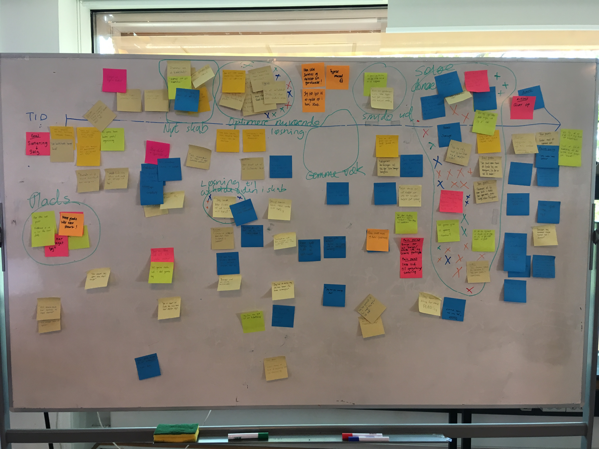

5 post-its med brugercitater
Experience Map fra holdet
Pain points:
- Kan ikke finde ud af hvordan han skal donere eller sælge sit tøj
- Kan ikke optimere sit nuværende skab
Goals:
- Kan donere og sælge sit tøj
- Kan optimere sit nuværende skab
Problemformulering: Det er for besværgeligt at sælge over nettet
Det koster tid og penge at sælge over nettet, man skal sende pakker og det kan ikke altid betale sig, hvis man sælger sit tøj billigt. Alligevel er der noget tøj, som er for godt til bare at smide ud og nogle ting vil man gerne tjene lidt penge på. Det koster penge at få en stand på et loppemarket og det bliver for besværgeligt at tage billeder af sit tøj og sætte det til salg og besvare spørgsmål fra folk der måske er interresseret.
Persona